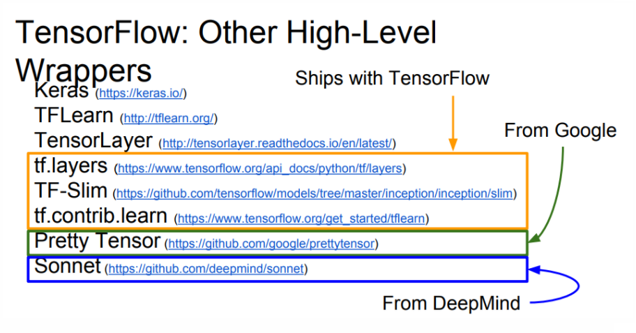
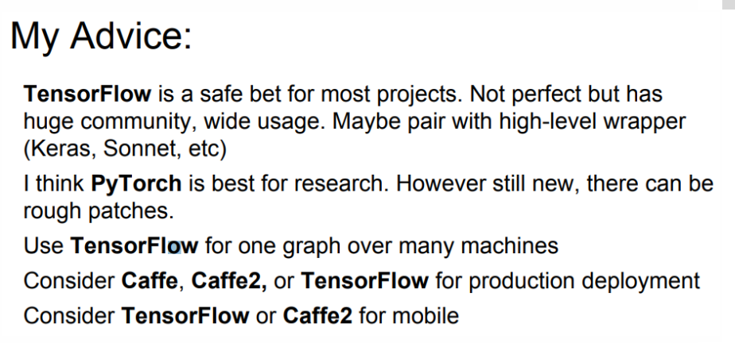
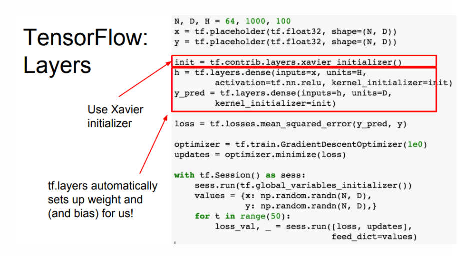

机器学习常用tool总结
tensorflow
tensorflow Introduce  
tf xavier init 
使用tf.concat连接多个神经网络输出
tf.concat(values, concat_dim, name='concat') # 0 : 行， 1: 列 # fc2_* 大小: 1*54; predict 大小：1*324 predict = tf.concat([fc2_1, fc2_2, fc2_3, fc2_4, fc2_5, fc2_6], 1)- mnist 数据集合 image 是有做过正则化的
参考数据预处理 在处理自然图像时，我们获得的像素值在 [0,255] 区间中，常用的处理是将这些像素值除以 255，使它们缩放到 [0,1] 中. - tf.clip_by_value(A, min, max)
输入一个张量A，把A中的每一个元素的值都压缩在min和max之间。小于min的让它等于min，大于max的元素的值等于max。
numpy
- 矩阵操作
- 全0矩阵
np.zeros() - 全1矩阵
np.ones([1, 4]) - 填充矩阵
np.full([2, 3], 1.2) - 随机矩阵
np.empty([2, 3]) - 单位矩阵(对角矩阵)
np.identity(3) / eye() - 对角矩阵(带偏移)
np.diagflat([1, 2, 3], k=1) - 下三角矩阵
np.tri() - 范德蒙矩阵
np.vander()
- 全0矩阵